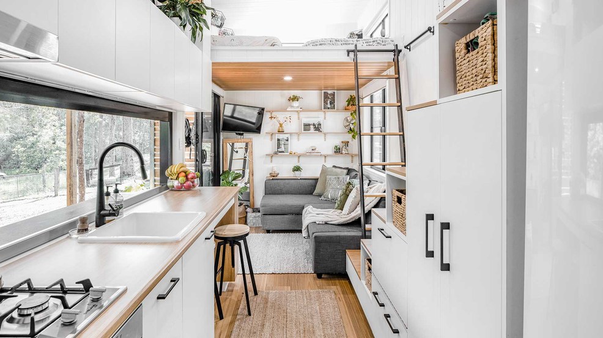
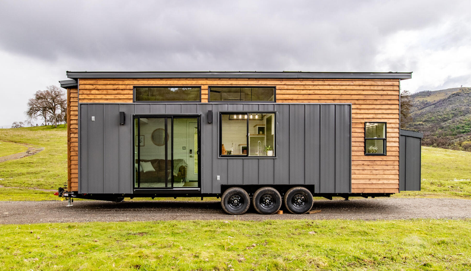

Concevoir une Tiny House, du croquis à la maquette.
Un dossier d'étude complet mené en équipe : plans, maquette numérique, maquette en carton découpée au laser et dossier explicatif — pour répondre à une seule question de conception.


« Comment vivre le plus confortablement possible dans une maison mobile en limitant les impacts environnementaux ? »
Les Tiny House — ces « mignonnes petites maisons » — sont nées aux États-Unis à la suite de la crise immobilière de 2008, avant d'arriver en France vers 2012. Bien moins chères qu'une maison traditionnelle, elles prônent une simplicité de vie et une sobriété volontaire, tout en respectant les mêmes exigences de confort que les autres habitations : isolation, étanchéité, électricité, eau chaude, chauffage…
Construites sur une remorque et en ossature bois, elles sont aussi écologiques : moins de matériaux, moins de consommation d'énergie. Le défi central est l'optimisation de l'espace — placards coulissants, meubles hybrides, espaces multi-fonctions — pour qu'elles restent confortables toute l'année.
Un dossier d'étude complet comprenant des plans, une maquette numérique 3D, une maquette physique en carton et un dossier explicatif, en respectant un cahier des charges précis. En début de Première, vous n'avez pas encore toutes les connaissances nécessaires : la séquence vous fait donc passer par plusieurs activités — dessin de plans, prise en main d'un logiciel 3D, découpe laser — avant d'aboutir au rendu final.
Les exigences à respecter
Extrait du diagramme des exigences remis en lancement de projet — trois familles de contraintes guident toutes les décisions de conception.
Vivre confortablement
Zone de repos, zone de repas, toilettes, se laver, protéger les denrées périssables, zone de rangement, zone de loisirs, et être esthétique — un style original et équilibré.
Le moins cher et le plus sûr
Résistances thermiques minimales — Rmur = 2,5 m².K/W, Rsol = 2 m².K/W, Rtoit = 3,5 m².K/W. Gabarit route : hauteur max. 3 m sous tunnel. Dimensions remorque max. 6 m × 2,5 m. Espace technique accessible de 50 × 50 × 50 cm. Être hors d'eau et hors d'air.
La plus écologique
Matériaux à faible énergie grise, électricité et chauffage à base d'énergies renouvelables, autonomie visée à 100 % en électricité et en chaleur.
Sept étapes, un seul dossier
Chaque étape s'appuie sur la précédente. Suivez l'ordre proposé — vous pouvez toujours revenir en arrière depuis la barre d'étapes en haut de chaque page.
Lancement du projet
Découverte de la mise en situation, de la problématique et du cahier des charges complet.
Projet 1Découverte des Tiny House
Plancher, ossature, bardage et développement durable — un questionnaire vidéo pour construire le vocabulaire technique.
Projet 2Style & esquisse
Comparer six styles de Tiny House, puis dessiner sa propre esquisse intérieure et extérieure.
Projet 3Choix de solution
Confronter les deux esquisses, argumenter et retenir une idée commune à l'aide d'un tableau de choix.
Projet 4Plans à l'échelle
Trois feuilles A3 : coupe, quatre façades avec ouvrants, et perspective libre — dans les normes du dessin technique.
Activité supportAS — Prise en main de SketchUp
S'entraîner sur une maison classique — plancher, murs, ouvrants, toit, décoration — avant de modéliser sa propre Tiny.
Projet 5Maquette numérique SketchUp
Modéliser la Tiny en 3D sur SketchUp Free : balises, groupes, aménagement intérieur.
Projet 6Étude de l'installation électrique
Plan d'implantation des luminaires, commandes, prises et réseau, respect de la norme NFC 15-100, électroménager et puissance souscrite.
FabLabDécoupe laser de la maquette carton
Le protocole complet d'utilisation de la découpeuse laser pour fabriquer la maquette physique.
RenduRendu final
La checklist complète du dossier attendu et le déroulé de la présentation orale.
ÉvaluationGrille d'évaluation
Les seize critères notés, répartis sur 30 points, pour savoir précisément ce qui est attendu.